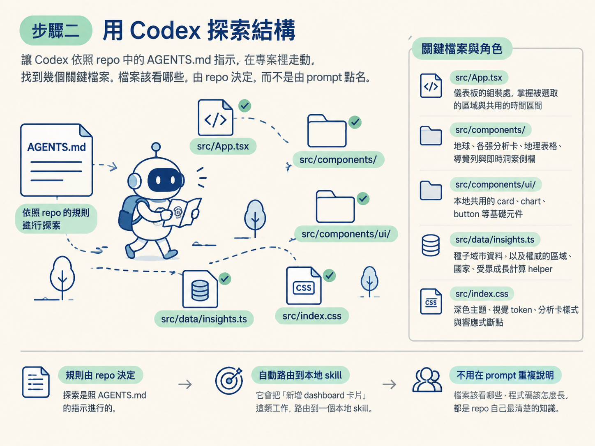
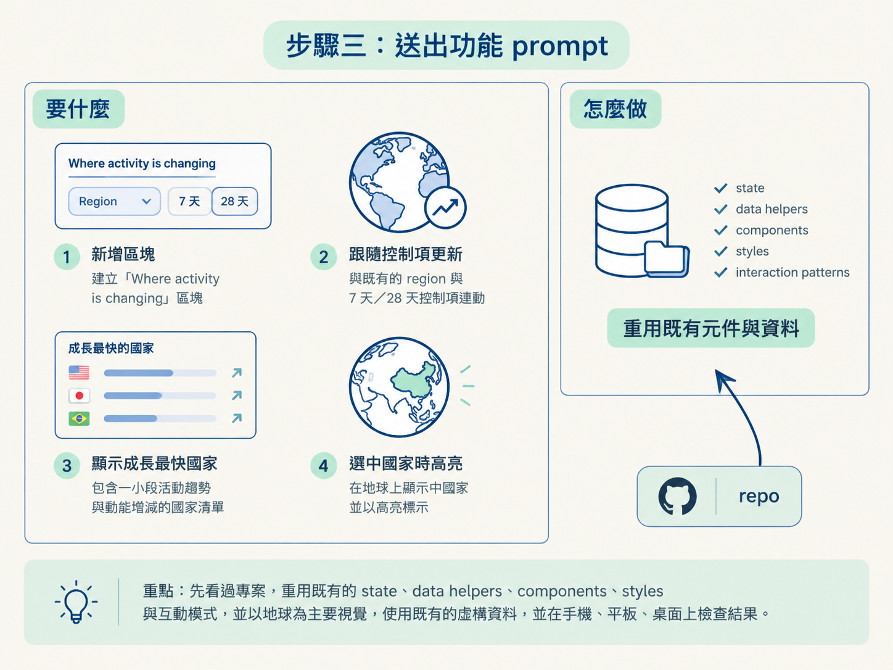

做完這一步，你會得到三樣東西：一個跑起來的專案、一份對它結構的認識，以及一段已經送出給 Codex 的功能 prompt。你會在一個既有的 dashboard 裡，加上一個叫 audience momentum（觀眾動能）的區塊，用來看出哪個國家成長最快。
動手前需要先具備兩件事：第一，你手上已經有那個專案；第二，你知道怎麼啟動它。如果你是跟著課程走，repo 的主分支上就放著這個叫 user-insights 的專案：一個「BlossomView」儀表板，用地球顯示某個 App 的使用者分布在世界哪裡，可以依區域篩選，而且一篩選，整個儀表板都會跟著變。
還有一件事要先確認：你人在既有專案裡，不是在空資料夾。這一節的整套做法，靠的就是那些既有的東西替你做事。
先讓 dashboard 在瀏覽器裡活著。專案有了實際畫面，後面的改動才有東西可以對照。
啟動指令寫在專案的 AGENTS.md 裡：
- Run `pnpm run dev` for the local Vite dashboard.執行 pnpm run dev，打開它給你的本機網址。預期看到的是那個地球，以及環繞在旁邊的幾張分析卡片。
接著隨手點一下區域篩選，感受「整個儀表板一起變」這件事。這是待會的驗收重點：新增的卡片必須跟著一起變，而不是自己活在另一個時空。
這裡是整節的關鍵動作：動手之前，先讓 Codex 看懂這個 repo。
課程講者在這邊示範了一件值得記住的事：她平常根本不開 IDE。原因有兩個。一是 Codex 現在內建了一個極簡的 IDE，你在對話裡點開某個被建立成 artifact 的檔案，就能在側邊面板直接手動編輯。二是探索這件事本身，也可以直接交給 Codex 做。
所以你的動作不是自己從頭翻完整個專案，而是讓 Codex 去翻。真要理解它讀了哪些東西，你可以請它摘要，或用內建 IDE 點開它提到的檔案。它會照著 repo 裡的指示，找到幾類關鍵檔案：
| 檔案 | 它在專案裡的角色 |
|---|---|
src/App.tsx | 儀表板的組裝處，掌握被選取的區域與共用的時間區間 |
src/components/ | 地球、各張分析卡、地理表格、導覽列與即時洞察側欄 |
src/components/ui/ | 本地共用的 card、chart、button 等基礎元件 |
src/data/insights.ts | 種子城市資料，以及權威的區域、國家、受眾成長計算 helper |
src/index.css | 深色主題、視覺 token、分析卡樣式與響應式斷點 |
要注意的是：這個「先探索」的判斷不是你下達的指令，而是專案的 AGENTS.md 要 Codex 這麼做，而且它會把「新增 dashboard 卡片」這類工作路由到一個本地 skill。為什麼要這樣設計？因為檔案該看哪些、程式碼該怎麼長，都是 repo 自己最清楚的知識；寫進 AGENTS.md 之後，每個人都不用在 prompt 裡重講一遍。skill 是什麼、怎麼被路由到，是下一節要拆的東西。現在你只要知道：探索是照 repo 的規則進行的，你的 prompt 裡沒有出現任何檔案名稱。

結構看懂了，就可以送功能需求。課程示範用的 prompt 全文如下：
Can you add a “Where activity is changing” section to User Insights?
It should update with the existing region and 7-day or 28-day controls. Show the fastest-growing country, a small activity trend, and a short list of countries gaining or losing momentum. When someone selects a country, highlight it on the globe.
Before building it, look through the project and reuse the existing state, data helpers, components, styles, and interaction patterns. Keep the globe as the main focus, use the existing fictional data, and check the result on mobile, tablet, and desktop.逐句看它在要求什麼：新增一個「Where activity is changing」區塊；跟著既有的 region 與 7 天／28 天控制項更新；顯示成長最快的國家、一小段活動趨勢，以及一份動能增減的國家清單；選中國家時在地球上高亮。
這幾句全是結果與行為，沒有半句在指定元件怎麼拆、資料怎麼存。它唯一提到實作方式的地方，是那句「先看過專案，重用既有的 state、data helpers、components、styles 與互動模式」。

那句為什麼這樣設計？它把「要用哪些東西」的決定權交還給 repo，而不是自己點名元件或套件。也因為它講得這麼一般，一個不懂這個 repo 的 PM 才寫得出來。
順手學一個 prompt 小技巧：即使是一段沒那麼精雕細琢的 prompt，只要點出想要的結果、再補上一句「重用既有東西」，通常就能得到不那麼通用的輸出。Prompt 不需要完美，用口述的、把限制散在句子裡，都行。
送出去之後，就讓 Codex 自己跑。課程示範裡它跑了約十分鐘，過程中自己截了圖來檢查，最後依照 repo 給的指引做完收尾檢查，得出結果。你不需要在旁邊一步步盯著，除非它明顯偏離方向。
做完的長這樣：dashboard 跑得起來，新的區塊出現在儀表板上，而你能覆述那段 prompt 裡哪些句子是「要什麼」、哪一句是把做法交還給 repo。到這條為止就驗收完畢。
至於成果為什麼會「長得跟其他卡片一模一樣」，原理不歸這一節管，那是下一節要拆的傳導鏈：AGENTS.md 怎麼把工作路由到 skill，skill 又怎麼把 Codex 帶到正確的元件與資料契約。
在既有專案加功能的程序是：先把專案跑起來（pnpm run dev），再用 Codex 依 repo 的規則探索結構（不必自己開 IDE），最後送出一段只描述結果、並要求重用既有元件與資料的功能 prompt。Prompt 不需要完美，關鍵是它講的是「要什麼」，而不是自己指定設計系統與套件。